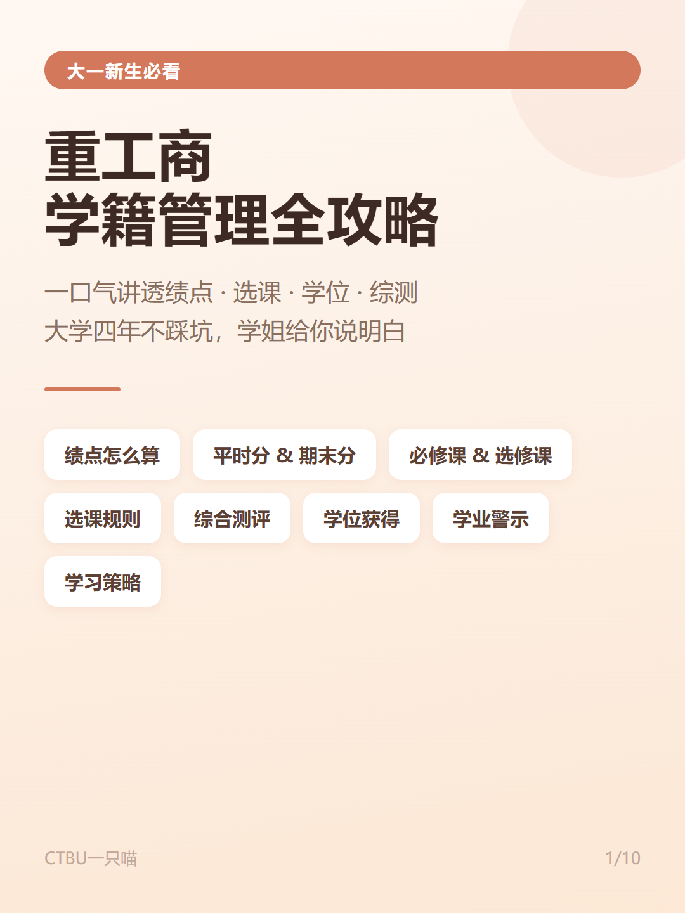
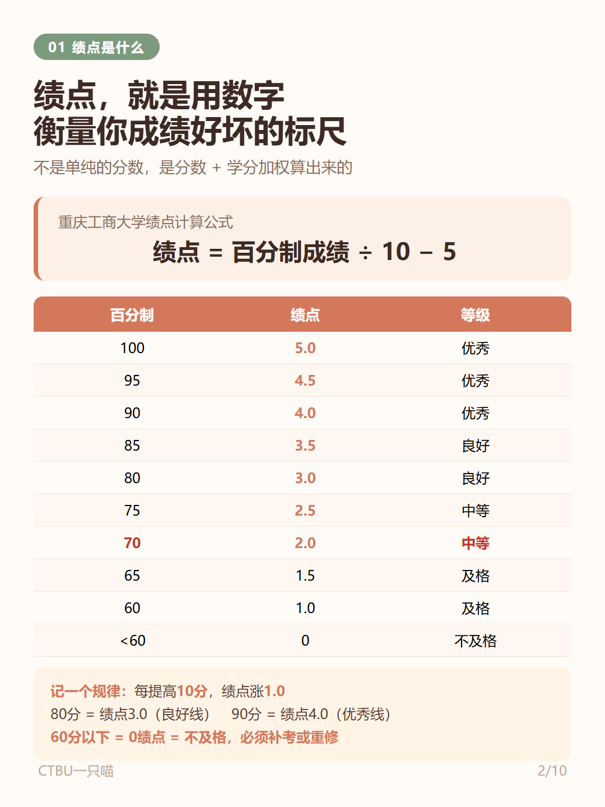
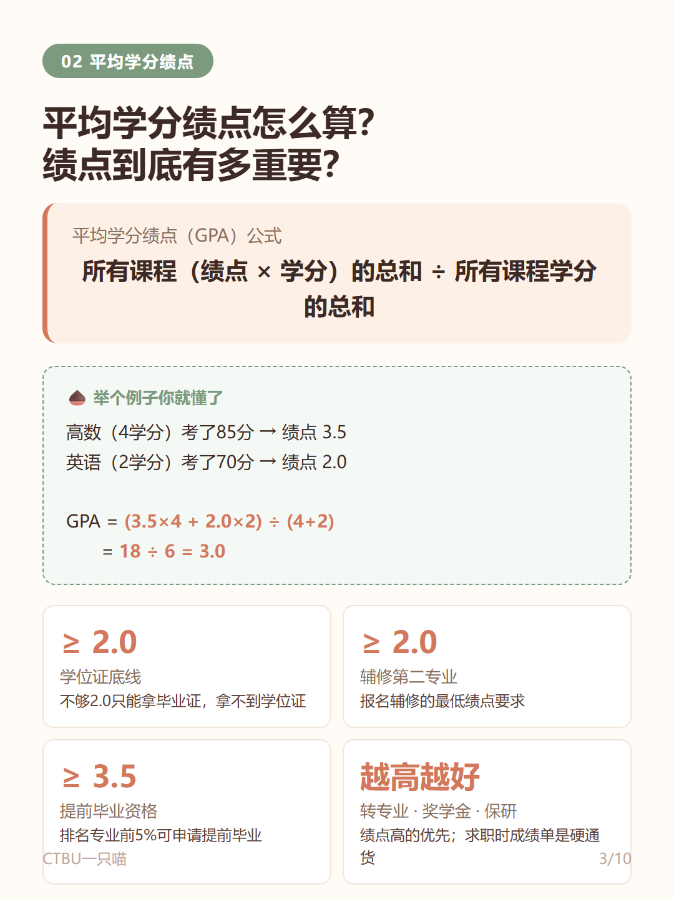
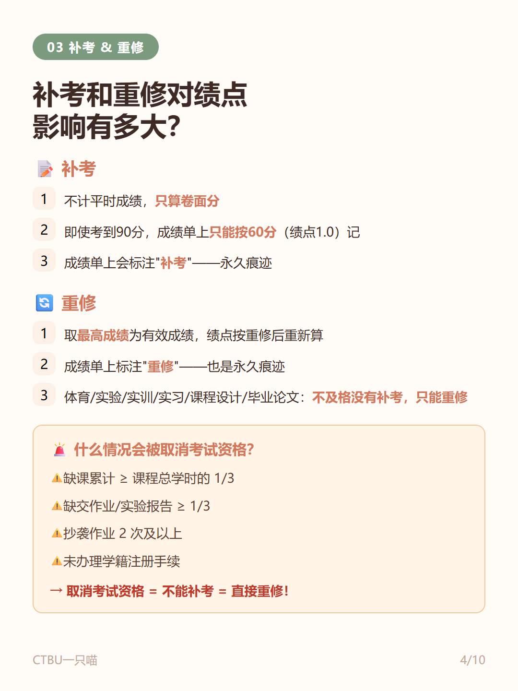
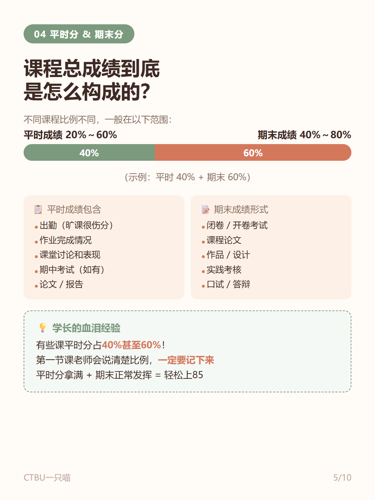
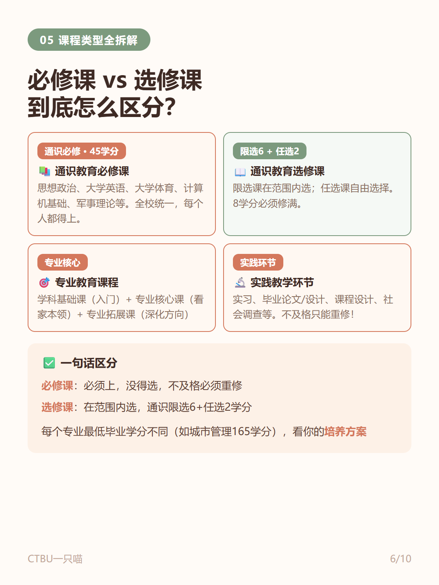
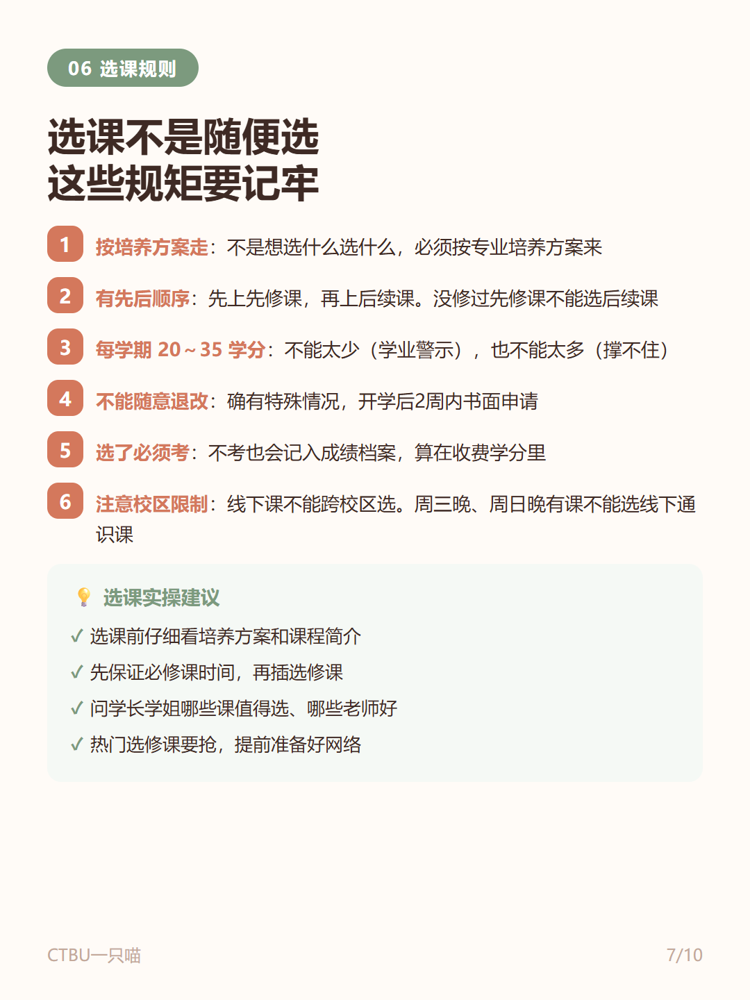
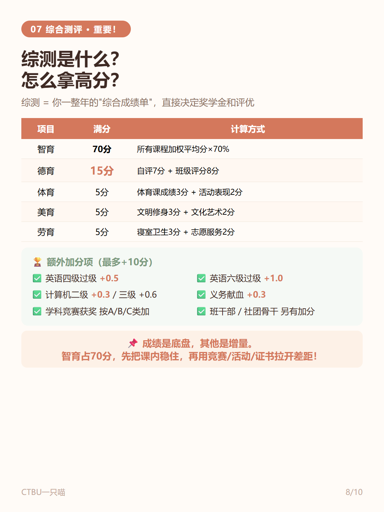
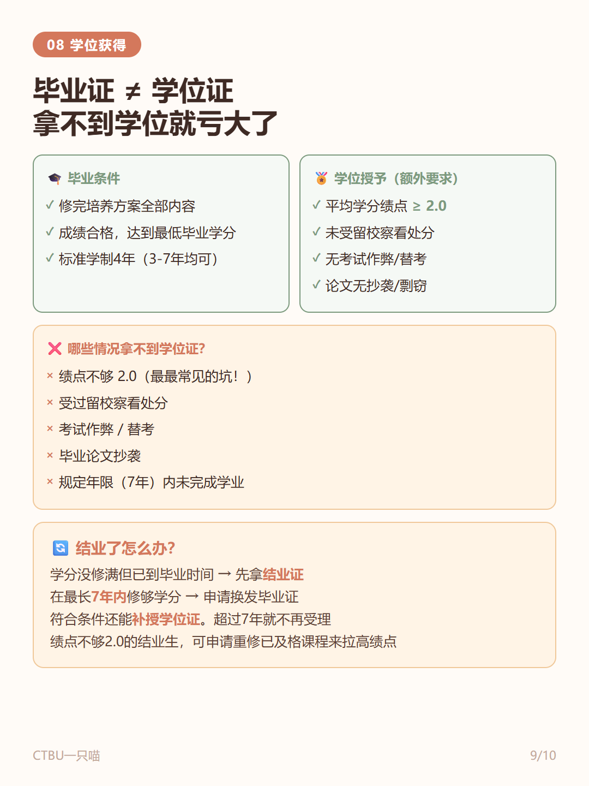
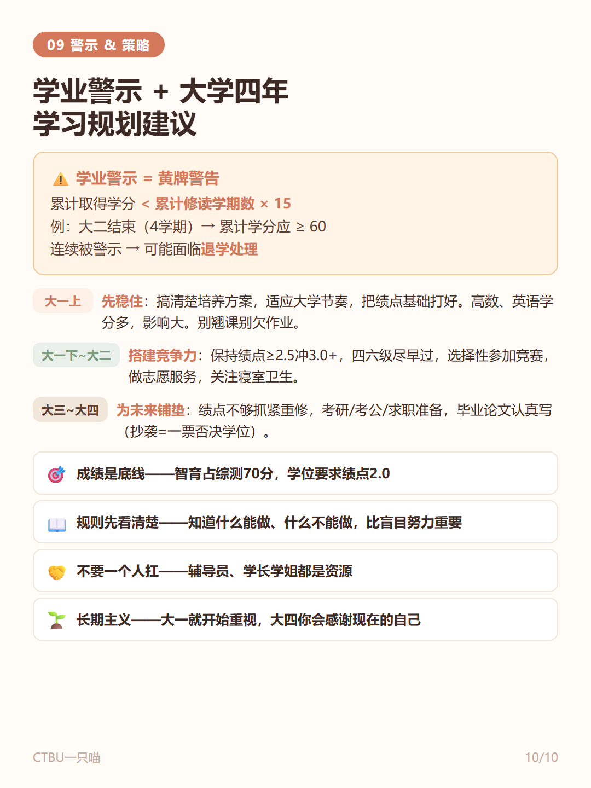

先说结论
绩点、学分、选课这三件事，开学第一个月就会全部撞上你。这篇指南按顺序看完，教务系统里的每个数字你都知道是什么意思、怎么影响你。
下面这套图是学姐整理的完整版攻略，从"绩点是什么"讲到"怎么选课"，一共 10 张，建议从上往下按顺序看，每一张都是下一步的基础👇










学姐碎碎念
看完还不明白的，别自己瞎琢磨——开学后多问一句学长学姐，比试错一学期划算得多。绩点从大一第一学期就开始算，很多同学是大一下才反应过来，已经吃了亏。